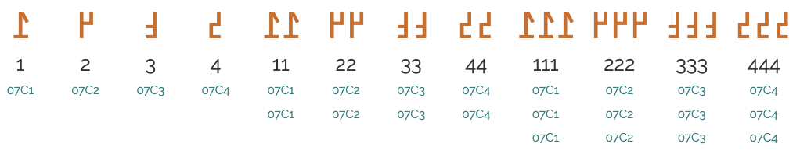
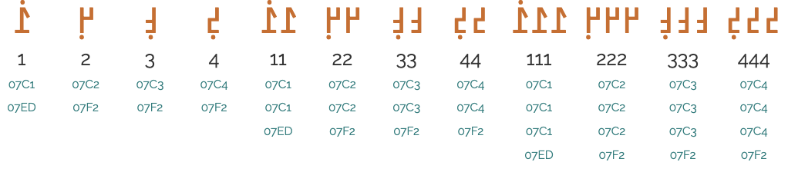

This document describes requirements for the layout and presentation of text in a koiné register of Manding called Kángbɛ, using the N'Ko script when they are used by Web standards and technologies, such as HTML, CSS, Mobile Web, Digital Publications, and Unicode.
This early draft has not yet been through any review process. Please do not rely on the contents.
This document describes the basic requirements layout and text support on the Web and in eBooks for a koiné register of Manding called Kángbɛ, using the N'Ko script. These requirements provide information for Web technologies such as CSS, HTML and digital publications about how to support users of the N'Ko script. Currently the document focuses on N'Ko as used for the koiné called Kángbɛ. The information here is developed in conjunction with a document that summarises gaps in support on the Web for N'Ko.
This document provides information about the N'Ko script as used for a koiné register of Manding called Kángbɛ.
This document should contain no reference to a particular technology. For example, it should not say "CSS does/doesn't do such and such", and it should not describe how a technology, such as CSS, should implement the requirements. It is technology agnostic, so that it will be evergreen, and it simply describes how the script works. The gap analysis document is the appropriate place for all kinds of technology-specific information.
Gap analysis
This document is pointed to by a separate document, N'Ko Gap Analysis, which describes gaps in support for N'Ko on the Web, and prioritises and describes the impact of those gaps on the user.
Wherever an unsupported feature is indentified through the gap analysis process, the requirements for that feature need to be documented. Those requirements can be described here.
As gaps in support for N'Ko are captured, the gap is brought to the attention of the relevant spec developer or browser implementation community. The progress of such work is tracked in the Gap Analysis Pipeline.
Other related resources
The initial material for this document was an edited extract from the page N’Ko orthography notes. That page contains additional details about character usage and how the writing system works, plus interactive information, which are not available here.
The document Language enablement index points to this document and others, and provides a central location for developers and implementers to find information related to various scripts.
The W3C also maintains a tracking system that has links to GitHub issues in W3C repositories. There are separate links for (a) requests from developers to the user community for information about how scripts/languages work, (b) issues raised against a spec, and (c) browser bugs. For example, you can find out what information developers are currently seeking, and the resulting list can also be filtered by script.
N’Ko script overview
The N’Ko script is an alphabet. Both consonants and vowels are indicated by letters.
N’Ko text is written right-to-left in horizontal lines. Unlike other RTL scripts, such as Arabic and Hebrew, numbers are also written right-to-left.
Words are separated by spaces.
The script is normally cursive, but in certain circumstances a non-joining font style may be used.
N’Ko has 19 native consonant letters. Use of 3 different diacritics results in letters for 22 more sounds used in foreign and loan words (mostly French or Arabic). There is also a nasal syllabic, and 2 'abstract' characters
N’Ko doesn't have corresponding letters for g, ŋ, and z used in the Latin orthographies of Manding languages. Also, plurals that are written by appending a w to a word in Bamanan are generally written in N’Ko by adding a free-standing particle such as ߟߎ߬lù or ߠߎ߬nù.
An unusual feature is that if two adjacent consonants are followed by the same vowel, the vowel is omitted after the first consonant.
N’Ko has 7 vowel letters. A diacritic is used to create 3 more letters for foreign sounds.
Another diacritic produces nasalisation of the vowel sound.
N’Ko also has a letter to indicate the absence of a vowel, which is used regularly.
N’Ko has 7 combining tone marks and 2 tone letters. Several of these have more than one use, indicating vowel length in addition to tone.
N’Ko has it's own set of digits, which, unlike Arabic, are written right-to-left.
Text direction
N’Ko text is written horizontally, with successive lines progressing down the page.
Inline text is right-to-left in the main but, as in most right-to-left scripts, embedded text in left-to-right scripts is written left-to-right (producing 'bidirectional' text). However, like Adlam but unlike Arabic, numbers are also written with digits in right-to-left order.
N’Ko-script words are read right-to-left, starting from the right of this line, but 'Karl Marx' is read left-to-right. The numbers (1818-1881) and the range, on the other hand are written right-to-left.
The Unicode Bidirectional Algorithm automatically takes care of the ordering for all the text in [[[#fig_bidi]]], as long as the 'base direction' is set to RTL. In HTML this can be set using the dir attribute, or in plain text using formatting controls (see [[[#directioncontrols]]]).
If the base direction is not set appropriately, the directional runs will be ordered incorrectly, as shown in [[[#fig_bidi_no_base_direction]]].
Unicode provides a set of 10 formatting characters that can be used to control the direction of text when displayed. These characters have no visual form in the rendered text, however text editing applications may have a way to show their location.
U+202B RIGHT-TO-LEFT EMBEDDING
(RLE),
U+202A LEFT-TO-RIGHT EMBEDDING
(LRE), and
U+202C POP DIRECTIONAL FORMATTING
(PDF) are in widespread use to set the base direction for an inline range of characters. RLE/LRE comes at the start, and PDF at the end of a range of characters for which the base direction is to be set.
U+202B RIGHT-TO-LEFT EMBEDDING
(RLE),
U+202A LEFT-TO-RIGHT EMBEDDING
(LRE), and
U+202C POP DIRECTIONAL FORMATTING
(PDF) are in widespread use to set the base direction for an inline range of characters. RLE/LRE comes at the start, and PDF at the end of a range of characters for which the base direction is to be set.
In Unicode 6.1, the Unicode Standard added a set of characters which do the same thing but also isolate the content from surrounding characters, in order to avoid spillover effects. They are U+2067 RIGHT-TO-LEFT ISOLATE (RLI), U+2066 LEFT-TO-RIGHT ISOLATE (LRI), and U+2069 POP DIRECTIONAL ISOLATE (PDI). The Unicode Standard recommends that these be used instead of RLE/LRE...PDF.
There is also U+2068 FIRST STRONG ISOLATE (FSI), used initially to set the base direction according to the first recognised strongly-directional character.
U+200F RIGHT-TO-LEFT MARK (RLM) and U+200E LEFT-TO-RIGHT MARK (LRM) are invisible characters with strong directional properties that are also sometimes used to produce the correct ordering of text.
The orthography has no case distinction, and no special transforms are needed to convert between characters.
Font styles
N’Ko is usually cursive, ie. letters in a word are joined up.
Non-cursive fonts are sometimes used, mainly as display fonts for book and article titles.§
An example of unjoined text used for the title of a section. The body text is joined.
Cursive text
Non-joining glyphs
As mentioned in the previous section, fonts containing non-joining glyphs are sometimes used as display fonts for book and article titles (see [[[#fig_unjoined]]]).
The shapes of letters in unjoined fonts can vary, and they may derive from old cursive font implementations. The shapes shown in the title of [[[#fig_unjoined]]] often have short baseline extensions, for example, looks like
, however, these extensions don't join with adjacent characters.
The shapes just mentioned can be found quite commonly, however the World Organisation for the Development of N'Ko prefers that unjoined shapes look the same as the isolated forms of letters without the baseline extensions.§
Joining forms
When N’Ko is cursive, letters in a word are joined up. Fonts need to produce the appropriate joining form for a letter, according to its visual context, but the code point remains the same. This results in four different glyphs for most letters (including an isolated glyph).
Cursive connections in a word. The highlights show both medial and final forms of ߐ.
Unlike some other cursive scripts, the cursive treatment doesn't produce significant variations of the essential part of the glyph for a character.
All letters are capable of joining on both sides.
Unlike Arabic or Syriac, joining forms only differ by the addition of a small baseline extension. Also, whereas Arabic and Syriac re-use a number of basic shapes to create additional letters by adding diacritics, in N’Ko each letter shape is different. [[[#fig_joining_forms]]] shows the basic shapes in N’Ko and what their joining forms look like.
Joining side:
none
right
both
left
ߔU+07D4 NKO LETTER PA
ߔ
ߺߔ
ߺߔߺ
ߔߺ
ߓU+07D3 NKO LETTER BA
ߓ
ߺߓ
ߺߓߺ
ߓߺ
ߕU+07D5 NKO LETTER TA
ߕ
ߺߕ
ߺߕߺ
ߕߺ
ߘU+07D8 NKO LETTER DA
ߘ
ߺߘ
ߺߘߺ
ߘߺ
ߗU+07D7 NKO LETTER CHA
ߗ
ߺߗ
ߺߗߺ
ߗߺ
ߖU+07D6 NKO LETTER JA
ߖ
ߺߖ
ߺߖߺ
ߖߺ
ߞU+07DE NKO LETTER KA
ߞ
ߺߞ
ߺߞߺ
ߞߺ
ߜU+07DC NKO LETTER GBA
ߜ
ߺߜ
ߺߜߺ
ߜߺ
ߝU+07DD NKO LETTER FA
ߝ
ߺߝ
ߺߝߺ
ߝߺ
ߛU+07DB NKO LETTER SA
ߛ
ߺߛ
ߺߛߺ
ߛߺ
ߤU+07E4 NKO LETTER HA
ߤ
ߺߤ
ߺߤߺ
ߤߺ
ߡU+07E1 NKO LETTER MA
ߡ
ߺߡ
ߺߡߺ
ߡߺ
ߣU+07E3 NKO LETTER NA
ߣ
ߺߣ
ߺߣߺ
ߣߺ
ߢU+07E2 NKO LETTER NYA
ߢ
ߺߢ
ߺߢߺ
ߢߺ
ߥU+07E5 NKO LETTER WA
ߥ
ߺߥ
ߺߥߺ
ߥߺ
ߙU+07D9 NKO LETTER RA
ߙ
ߺߙ
ߺߙߺ
ߙߺ
ߚU+07DA NKO LETTER RRA
ߚ
ߺߚ
ߺߚߺ
ߚߺ
ߟU+07DF NKO LETTER LA
ߟ
ߺߟ
ߺߟߺ
ߟߺ
ߦU+07E6 NKO LETTER YA
ߦ
ߺߦ
ߺߦߺ
ߦߺ
ߒU+07D2 NKO LETTER N
ߒ
ߺߒ
ߺߒߺ
ߒߺ
ߊU+07CA NKO LETTER A
ߊ
ߺߊ
ߺߊߺ
ߊߺ
ߋU+07CB NKO LETTER EE
ߋ
ߺߋ
ߺߋߺ
ߋߺ
ߌU+07CC NKO LETTER I
ߌ
ߺߌ
ߺߌߺ
ߌߺ
ߍU+07CD NKO LETTER E
ߍ
ߺߍ
ߺߍߺ
ߍߺ
ߎU+07CE NKO LETTER U
ߎ
ߺߎ
ߺߎߺ
ߎߺ
ߏU+07CF NKO LETTER OO
ߏ
ߺߏ
ߺߏߺ
ߏߺ
ߐU+07D0 NKO LETTER O
ߐ
ߺߐ
ߺߐߺ
ߐߺ
Joining forms for shapes that join on both sides.
Managing glyph shaping
U+200D ZERO WIDTH JOINER
(ZWJ) and
U+200C ZERO WIDTH NON-JOINER
(ZWNJ) are used to control the visual joining behaviour of cursive glyphs. They are particularly useful in educational contexts.
ZWJ permits a letter to form a cursive connection without a visible neighbour.
ZWNJ prevents two adjacent letters forming a cursive connection with each other when rendered.
Context-based shaping & positioning
The Noto Sans NKo font changes the height of diacritics according to the height of the base character, but the preferred approach is to maintain the diacritics at the same height all along a line.§
The height of diacritics doesn't depend on the base consonant.show as text
ߊ߬ߟߎ߬
The only time a base character carries multiple combining characters is when one is a tone mark and the other is U+07F2 NKO COMBINING NASALIZATION MARK. These diacritics occur on opposite sides of the base letter, so this avoids the difficulties associated with correctly placing marks in the same location. (A letter that carries U+07F3 NKO COMBINING DOUBLE DOT ABOVE will not usually carry a tone mark as well.§)
Multiple diacritics attached to the same base consonant.show as text
ߓߊ߲߬
Apart from that, no shaping is needed other than that described for cursive connections.
Letterform slopes, weights, & italics
N’Ko uses italicisation and bolding.
An example of bolded inline text.
Italics may need to lean to the left, rather than to the right. Neil Patel writes:§
Formalized typographic practices for both Adlam and N’Ko are still being developed. When [JamraPatel] reached out to both communities to see if an Italic typeface would be beneficial, both communities expressed a desire to have one. Over the past few years, as the ability to use both of these scripts more readily in computing has increased, the need to be able to set more complex copy has increased as well. Both communities see the benefit of having italic typefaces to add some semantic value to their copy. On-line N’Ko has historically used synthetic obliques for things like by-lines on articles. ...
Since neither script had any precedent for a drawn italic typeface, we asked each community on how they would like to see it drawn. This is how N’Ko ended up with the leftward lean and Adlam with a rightward lean in our typeface. ... To my knowledge our typeface has the first drawn italicized N’Ko and Adlam, so this is all still a bit new.
Left-leaning italics in N’Ko.
Graphemes
No issues are evident with regard to grapheme selection.
Structural boundaries & markers
Word boundaries
The concept of 'word' is difficult to define in any language (see What is a word?). Here, a word is a vaguely-defined, but recognisable semantic unit that is typically smaller than a phrase and may comprise one or more syllables.
N’Ko has word units that are separated by spaces.
Te-kerende
The te-kerende is a common way of linking together a sequence of sounds that mean 'each and every ...'. It is possible to create new combinations, and the general pattern is to repeat the vowel of the first word, then repeat the first word, and put the te-kerende in between each item.§
ߡߐ߰ ߺ ߐ ߺ ߡߐ߰ mɔ _ ɔ _ mɔ everyone (each and every person)
ߛߎ ߺ ߎ ߺ ߛߎsu-u-suevery night
ߛߌ ߺ ߌ ߺ ߛߌ si _ i _ si anyone
The te-kerende sits on the baseline, and breaks cursive joining. There is a small space on either side.
Line-breaks only occur after te-kerende, and not before.§
Bracketed text
N'Ko commonly uses ASCII parentheses and brackets to insert parenthetical information into text.
start
end
standard
( U+0028 LEFT PARENTHESIS
) U+0029 RIGHT PARENTHESIS
other
[ U+005B LEFT SQUARE BRACKET
] U+005D RIGHT SQUARE BRACKET
⸜ U+2E1C LEFT LOW PARAPHRASE BRACKET
⸝ U+2E1D RIGHT LOW PARAPHRASE BRACKET
N'Ko parentheses and brackets.
The low paraphrase brackets may be used for quoting text as well as for editorial insertions that weren’t part of the original author’s text. Note that all these characters have mirrored glyphs (see below).
Mirrored characters
The words 'left' and 'right' in Unicode names for parentheses, brackets, and other paired characters should be ignored. LEFT should be read as if it said START, and RIGHT as END. The direction in which the glyphs point will be automatically determined according to the base direction of the text.
Both of these lines use >U+003E GREATER-THAN SIGN, but the direction it faces depends on the base direction at the point of display.
The number of characters that are mirrored in this way is around 550, most of which are mathematical symbols. Some are single characters, rather than pairs. The following are some of the more common ones.
( ) < > [ ] { } « » ‹ ›
Examples of mirrored characters.
Quotations & citations
N'Ko texts may use guillemets or native marks around quotations.
start
end
standard
« U+00AB LEFT-POINTING DOUBLE ANGLE QUOTATION MARK
» U+00BB RIGHT-POINTING DOUBLE ANGLE QUOTATION MARK
other
⸜U+2E1C LEFT LOW PARAPHRASE BRACKET
⸝U+2E1D RIGHT LOW PARAPHRASE BRACKET
other
﴿U+FD3F ORNATE RIGHT PARENTHESIS
﴾U+FD3E ORNATE LEFT PARENTHESIS
N'Ko quotation marks.
The quotation marks in the first two rows above are also mirrored as the directionality changes (see [[[#mirrored_characters]]]). Those in the bottom row are not mirrored during display, which means that for them LEFT means use on the left, and RIGHT means use on the right.
⸜U+2E1C LEFT LOW PARAPHRASE BRACKET and ⸝U+2E1D RIGHT LOW PARAPHRASE BRACKET are used as a pair to indicate indirect quotations§, eg.
⸜ߒߞߏ⸝
Observation:﴾U+FD3E ORNATE LEFT PARENTHESIS and ﴿U+FD3F ORNATE RIGHT PARENTHESIS derive from Arabic, and appear to be used for quotations in Islamic texts. The appearance of these brackets can vary from the shapes used in Arabic. Note also that they are encoded among presentation forms, but it is normal to use these particular code points as if they were normal characters. See examples here.
Example of ornate parentheses used for Quranic quotations.
Emphasis
N'Ko authors commonly apply bolding and sometimes italics to emphasise text (see [[[#fontstyle]]]).
Abbreviation, ellipsis & repetition
߽U+07FD NKO DANTAYALAN
is used to abbreviate units of measure. The table shows some examples from a long list by Everson:§
Full word
Abbreviation
ߞߎߘߍ kudɛ kilometer
ߞ߽U+07DE NKO LETTER KA + U+07FD NKO DANTAYALAN
ߛߌߘߐ sidɔ gram
ߛ߽U+07DB NKO LETTER SA + U+07FD NKO DANTAYALAN
ߕߏ߲ߜߊ to˜gᵇa litre
ߕ߽U+07D5 NKO LETTER TA + U+07FD NKO DANTAYALAN
ߜߟߊ߬ߥߊ߰ߘߋ߲ gbalàwàadẽ millimetre
ߡߥ߽U+07E1 NKO LETTER MA + U+07E5 NKO LETTER WA + U+07FD NKO DANTAYALAN
ߜߟߊ߬ߗߡߍ߬ߝߘߎ߬ߓߍ߲ gbàlàcɛ̀mɛ̀fùdùbɛ̃ cm²
ߡߗ߽߂U+07E1 NKO LETTER MA + U+07D7 NKO LETTER CHA + U+07FD NKO DANTAYALAN + U+07C2 NKO DIGIT TWO
Line & paragraph layout
Line breaking & hyphenation
By default, N'Ko breaks lines at inter-word spaces. As in almost all writing systems, certain punctuation characters should not appear at the end or the start of a line.
Breaking between Latin words.
When a line break occurs in the middle of an embedded left-to-right sequence, the items in that sequence need to be rearranged visually so that it isn't necessary to read lines from bottom to top.
[[[#latin-line-breaks]]] shows how two Latin words are apparently reordered in the flow of text to accommodate this rule. Of course, the rearragement is only that of the visual glyphs: nothing affects the order of the characters in memory.
The lower of these two images shows the result of decreasing the line width, so that text wraps between a sequence of Latin words.
In-word line-breaking
Lines can be broken inside a word, in which case- U+002D HYPHEN-MINUS is added to the end of the line.§
Line-edge rules
As in almost all writing systems, certain punctuation characters should not appear at the end or the start of a line. The Unicode line-break properties help applications decide whether a character should appear in these positions.
The following list gives examples of typical behaviours for some of the characters used in modern N'Ko script. Context may affect the behaviour of some of these and other characters.
“ ‘ ( ⸜ « should not be the last character on a line.
” ’ ) ⸝ » ߹ ؛ ؟ ߸ ، . :% should not begin a new line.
߾ ߿ should be kept with any number, even if separated by a space or parenthesis.
Text alignment & justification
The most common approach to justification relies on adjustment of spaces.§
Sometimes, however, ߺU+07FA NKO LAJANYALAN is used like Arabic tatweel to stretch the intra-word baseline.§
Text spacing
Text may be stretched, like in Arabic, using ߺ U+07FA NKO LAJANYALAN to fit a given space or make a heading stand out, eg. [[[#fig_letter_spacing]]] shows a streched version of the title,
ߞߏ߲ kɔ̌n do first, precede.
A title that is stretched using baseline extension characters.
This corresponds to the Arabic ـ U+0640 ARABIC TATWEEL.
Baselines, line height, etc.
N'Ko uses the so-called 'alphabetic' baseline, which is the same as for Latin and many other scripts.
N'Ko places diacritics above and below the base characters, but they don't stack. Diacritics can, however, appear above and below the same base. The letters themselves are relatively uniform in height, and have no descenders. There is no upper- vs. lowercase distinction.
To give an approximate idea, [[[#fig_baselines]]] compares Latin and N'Ko glyphs from the Noto Sans font. The basic height of N'Ko letters is typically around the Latin cap-height, however combining marks and the dorome sign reach beyond the Latin ascenders, creating a need for larger line spacing.
Font metrics for Latin text compared with N'Ko glyphs in the Noto Sans Nko font.
[[[#fig_baselines_other]]] shows similar comparisons for the Ebrima font.
Latin font metrics compared with N'Ko glyphs in the Ebrima font.
Counters
The N'Ko orthography uses 2 numeric styles with native digits. The first uses cardinal numbers, the second ordinal.
Cardinal numeric style
The cardinal numeric style is decimal-based and uses these digits.
'߁' '߂' '߃' '߄' '߅' '߆' '߇' '߈' '߉' '߀'

Examples of counter values using the N'Ko cardinal numeric counter style.View as text
The ordinal numeric style uses the same digits, but places a dot alongside. The dot goes over the digit ߁ (1), but goes below other digits, and it only appears alongside the leftmost digit. (Bear in mind that N'Ko digits run from right to left.)
'߁߭' '߂߲' '߃߲' '߄߲' '߅߲' '߆߲' '߇߲' '߈߲' '߉߲' '߀߲'

Examples of counter values using the N'Ko cardinal numeric counter style.View as text
An N'Ko list counter for cardinal number styles typically uses a hyphen + space as a suffix.
߁- ߂- ߃- ߄- ߅-
Separator for N'Ko list counters.
Page & book layout
General page layout & progression
N’Ko books, magazines, etc. are bound on the right-hand side, and pages progress from right to left.
Binding configuration for N’Ko books, magazines, etc.
Columns are vertical but run right-to-left across the page.
Layout direction
The right-to-left orientation of the script affects the direction of page layout, and of the layout of items within the page.
An N’Ko web page should be the mirror-image of pages in, say, French. This includes the various navigation items on the page, and the placement of other panels on the page.
On the other hand, the video controls assume a LTR direction. This is mostly constrained by technology at the moment, and whether or not this is acceptable is still being debated.
Acknowledgements
The initial content of this document was created from parts of this page.
Special thanks to the following people who contributed information that is used in this document (contributors' names listed in in alphabetic order).
Coleman Donaldson, Diéfadima Dioubate Sesay, Neil Suresh Patel

 U+202B RIGHT-TO-LEFT EMBEDDING
(RLE),
U+202B RIGHT-TO-LEFT EMBEDDING
(RLE),
 U+202A LEFT-TO-RIGHT EMBEDDING
(LRE), and
U+202A LEFT-TO-RIGHT EMBEDDING
(LRE), and
 U+202C POP DIRECTIONAL FORMATTING
(PDF) are in widespread use to set the base direction for an inline range of characters. RLE/LRE comes at the start, and PDF at the end of a range of characters for which the base direction is to be set.
U+202C POP DIRECTIONAL FORMATTING
(PDF) are in widespread use to set the base direction for an inline range of characters. RLE/LRE comes at the start, and PDF at the end of a range of characters for which the base direction is to be set. U+2067 RIGHT-TO-LEFT ISOLATE (RLI),
U+2067 RIGHT-TO-LEFT ISOLATE (RLI),  U+2066 LEFT-TO-RIGHT ISOLATE (LRI), and
U+2066 LEFT-TO-RIGHT ISOLATE (LRI), and  U+2069 POP DIRECTIONAL ISOLATE (PDI). The Unicode Standard recommends that these be used instead of RLE/LRE...PDF.
U+2069 POP DIRECTIONAL ISOLATE (PDI). The Unicode Standard recommends that these be used instead of RLE/LRE...PDF.  U+2068 FIRST STRONG ISOLATE (FSI), used initially to set the base direction according to the first recognised strongly-directional character.
U+2068 FIRST STRONG ISOLATE (FSI), used initially to set the base direction according to the first recognised strongly-directional character. U+200F RIGHT-TO-LEFT MARK (RLM) and
U+200F RIGHT-TO-LEFT MARK (RLM) and  U+200E LEFT-TO-RIGHT MARK (LRM) are invisible characters with strong directional properties that are also sometimes used to produce the correct ordering of text.
U+200E LEFT-TO-RIGHT MARK (LRM) are invisible characters with strong directional properties that are also sometimes used to produce the correct ordering of text.